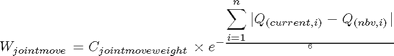
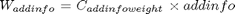
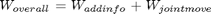

calculate_NBV_overallweight
Description: This function calculates the overal weighting of a certain view using a formula for joint weight and additional info
Contents
Function Call
Inputs:
cur_view (int) describes which of the bestviews we are interested in caculating
Returns: NULL
function calculate_NBV_overallweight(cur_view)
Variables
global bestviews optimise Q
JOINT MOVE WEIGHT

%This will give you the joint difference weighted between 0-1 of the bestview %joint verses the current joint so if each joint had to move pi (max %pos) to get to the new position then each one should get a 1 and hence %we want MINIMISE THIS bestviews(cur_view).jointmoveweight=... optimise.jointmoveweight*... exp(-1*... sum(... abs((Q-bestviews(cur_view).Q))... )... /length(Q)... );
ADDINFO WEIGHT

%then we want to see the added value of this new scan, what percentage %WE WANT TO MAXIMISE THIS, however these are not going to be very %different, like 0.0211, or 0.212 even though it has many more points %than the other, you should delete the average of the additional info bestviews(cur_view).addinfoweight=... optimise.addinfoweight*... (bestviews(cur_view).addinfo);
OVERALL WEIGHT

%this is the sum which we which to maximise, very low joint values %changes will make this value high bestviews(cur_view).overall=... bestviews(cur_view).addinfoweight+... bestviews(cur_view).jointmoveweight;